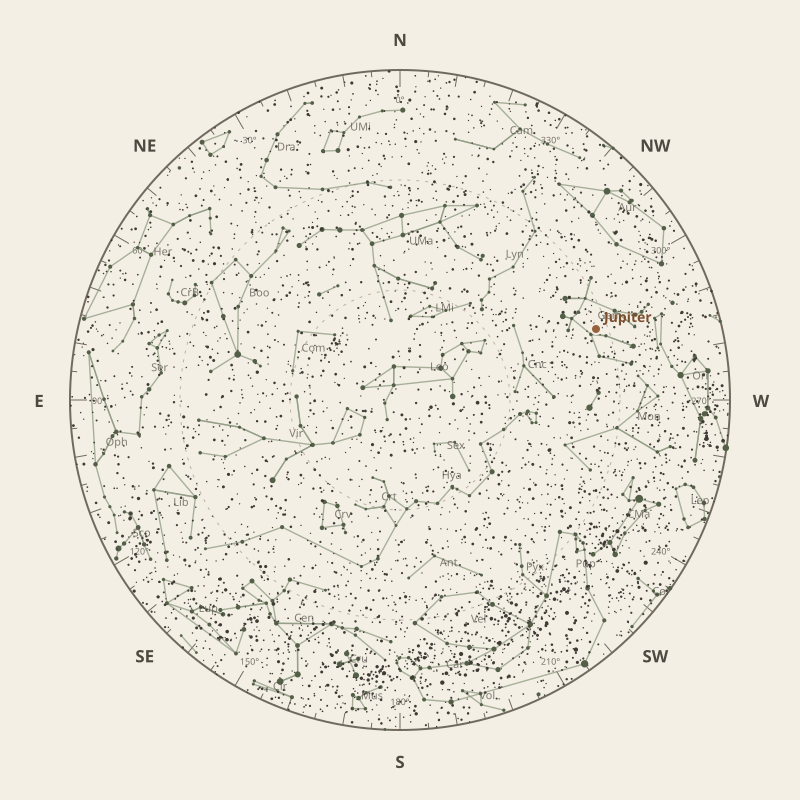

← Annual almanac


North is at the top; east is at the left. Planets shown are above the horizon at chart time.
Monthly field almanac
April 2026
Galactic Centre viewing is best on 21 Apr 2026, from 12:20 am to 5:50 am, reaching 50°.
- New Moon
- 18 Apr Darkest skies
- Full Moon
- 2 Apr Brightest skies
- Best dark window
- 14 Apr 10h 54m
Current conditions
Checking the sky near Malabar Coast, India…
Mid-month sky at 10 pm
Face the matching compass direction and read outward from the centre toward the horizon.

Night planner
Choose a date to see astronomical darkness, Moon interference, Galactic Centre visibility, and planet altitudes and times.
Best low-Moon dark periods this month
- 7:00 pm–5:54 am10h 54m · 22% Moon
- 7:00 pm–5:53 am10h 54m · 14% Moon
- 7:00 pm–5:53 am10h 53m · 7% Moon
April highlights
- Milky Way
Milky Way core window
5h 04m with 50° altitude.
- Planets
Jupiter
Best monthly date at 78° altitude.
- Comets
Comet 3D
63° altitude; magnitude 15.8.
- Planetary events
Mercury greatest western elongation
Morning sky; 27.8° from the Sun.
- Occultations
HIP 57306 lunar occultation
4:11 am to 4:20 am; Moon at 20° altitude for the first listed contact.


Moon phases
98%
76%
14%
29%
92%
Low illumination favours faint targets. Bright lunar targets are best near full Moon.
Download Moon phase CSV →

Galactic Centre sessions
- 12:14 am–5:50 am5h 36m · core to 50°
- 12:20 am–5:50 am5h 30m · core to 50°
- 12:30 am–5:52 am5h 22m · core to 50°


Planet visibility
Evening
- Jupiter1 Apr · 7:00 pm78° · Excellent
- Uranus1 Apr · 7:00 pm40° · Good
- Venus30 Apr · 7:00 pm22° · Fair
Predawn
- Neptune30 Apr · 5:30 am20° · Fair
- Mercury7 Apr · 6:00 am16° · Fair
- Saturn30 Apr · 5:30 am15° · Poor
- Mars19 Apr · 6:00 am14° · Poor
Events
- Comet 3D63° altitude; magnitude 15.8.
- Mercury greatest western elongationMorning sky; 27.8° from the Sun.
- HIP 57306 lunar occultation4:11 am to 4:20 am; Moon at 20° altitude for the first listed contact.


Data and downloads
Positions are unavailable for 2 comet entries.
Occultation times use a smooth lunar limb; confirm grazing events with IOTA Occult 4.